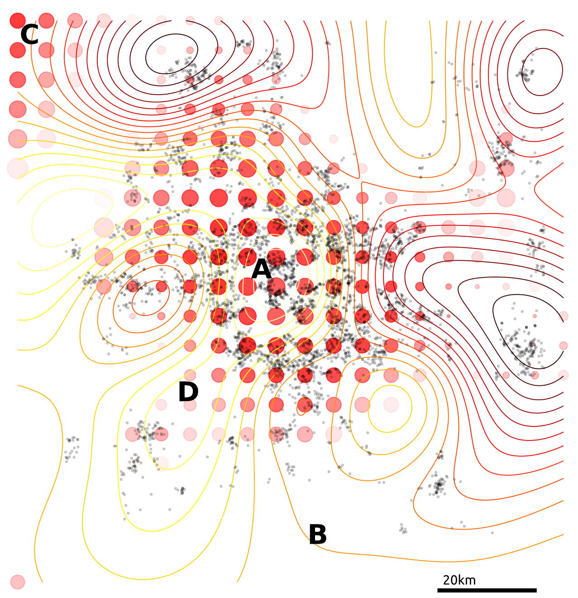
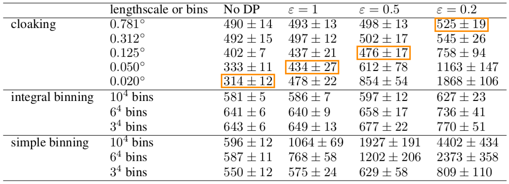

Cloaking Functions: Differential Privacy with Gaussian Processes
Neil D. Lawrence with Michael T. Smith, Max Zwiessele and Mauricio Alvarez
2017-08-30
Cloaking Functions: Differential Privacy with Gaussian Processes
2017-08-30
Neil D. Lawrence
with Michael T. Smith, Max Zwiessele and Mauricio Alvarez
Amazon and University of Sheffield
@lawrennd inverseprobability.com Paper on Arxiv
“Embodiment Factors”

|

|
|
| compute | ~10 gigaflops | ~ 1000 teraflops? |
| communicate | ~1 gigbit/s | ~ 100 bit/s |
embodiment (compute/communicate) |
10 | ~ 1013 |
Evolved Relationship
Evolved Relationship
Evolved Relationship
Conversation
Conversation
Conversation
Modelling
Modelling

Key Object
Covariance function, \(\mathbf{K}\)
Determines properties of samples.
Function of \(\mathbf{X}\), \[k_{i,j} = k(\mathbf{x}_i, \mathbf{x}_j)\]
Linear Algebra
Posterior mean
\[f_D(\mathbf{x_*}) = \mathbf{k}(\mathbf{x}_*, \mathbf{X}) \mathbf{K}^{-1} \mathbf{y}\]
Posterior covariance \[\mathbf{C}_* = \mathbf{K}_{*,*} - \mathbf{K}_{*,\mathbf{f}} \mathbf{K}^{-1} \mathbf{K}_{\mathbf{f}, *}\]
Linear Algebra
Posterior mean
\[f_D(\mathbf{x_*}) = \mathbf{k}(\mathbf{x}_*, \mathbf{X}) \boldsymbol{\alpha}\]
Posterior covariance \[\mathbf{C}_* = \mathbf{K}_{*,*} - \mathbf{K}_{*,\mathbf{f}} \mathbf{K}^{-1} \mathbf{K}_{\mathbf{f}, *}\]
Differential Privacy, summary
We want to protect a user from a linkage attack…
…while still performing inference over the whole group.
Making a dataset private is more than just erasing names.
To achieve a level of privacy one needs to add randomness to the data.
This is a fundamental feature of differential privacy.
See The Algorithmic Foundations of Differential Privacy by Dwork and Roth for a rigorous introduction to the framework.
Differential Privacy for Gaussian Processes
We have a dataset in which the inputs, \(\mathbf{X}\), are public. The outputs, \(\mathbf{y}\), we want to keep private.

Data consists of the heights and weights of 287 women from a census of the !Kung
Vectors and Functions
Hall et al. (2013) showed that one can ensure that a version of \(f\), function \(\tilde{f}\) is \((\varepsilon, \delta)\)-differentially private by adding a scaled sample from a GP prior.
3 pages of maths ahead!
Applied to Gaussian Processes
We applied this method to the GP posterior.
The covariance of the posterior only depends on the inputs, \(X\). So we can compute this without applying DP.
The mean function, \(f_D(\mathbf{x_*})\), does depend on \(\mathbf{y}\). \[f_D(\mathbf{x_*}) = \mathbf{k}(x_*, \mathbf{X}) \mathbf{K}^{-1} \mathbf{y}\]
We are interested in finding
\[|| f_D(\mathbf{x_*}) - f_{D^\prime}(\mathbf{x_*}) ||_H^2\]
…how much the mean function (in RKHS) can change due to a change in \(\mathbf{y}\).
Applied to Gaussian Processes
Using the representer theorem, we can write \[|| f_D(\mathbf{x_*}) - f_{D^\prime}(\mathbf{x_*}) ||_H^2\]
as:
\[\Big|\Big|\sum_{i=1}^n k(\mathbf{x_*},\mathbf{x}_i) \left(\alpha_i - \alpha^\prime_i\right)\Big|\Big|_H^2\]
where \(\boldsymbol{\alpha} - \boldsymbol{\alpha}^\prime = \mathbf{K}^{-1} \left(\mathbf{y} - \mathbf{y}^\prime \right)\)
L2 Norm
\[\Big|\Big|\sum_{i=1}^n k(\mathbf{x_*},\mathbf{x}_i) \left(\alpha_i - \alpha^\prime_i\right)\Big|\Big|_H^2\]
where \(\boldsymbol{\alpha} - \boldsymbol{\alpha}^\prime = \mathbf{K}^{-1} \left(\mathbf{y} - \mathbf{y}^\prime \right)\)
We constrain the kernel: \(-1\leq k(\cdot,\cdot) \leq 1\) and we only allow one element of \(\mathbf{y}\) and \(\mathbf{y}'\) to differ (by at most \(d\)).
So only one column of \(\mathbf{K}^{-1}\) will be involved in the change of mean (which we are summing over).
The distance above can then be shown to be no greater than \(d\;||\mathbf{K}^{-1}||_\infty\)
Applied to Gaussian Processes
This ‘works’ in that it allows DP predictions…but to avoid too much noise, the value of \(\varepsilon\) is too large (here it is 100)
EQ kernel, \(\ell = 25\) years, \(\Delta=100\)cm
Inducing Inputs
Using sparse methods (i.e. inducing inputs) can help reduce the sensitivity a little. We’ll see more on this later.
Cloaking
So far we’ve made the whole posterior mean function private…
…what if we just concentrate on making particular predictions private?
Effect of perturbation
Standard approach: sample the noise is from the GP’s prior.
Not necessarily the most ‘efficient’ covariance to use.
Cloaking
Left: Function change. Right: test point change
Cloaking
Left: Function change. Right: test point change
Cloaking
Left: Function change. Right: test point change
Cloaking
Left: Function change. Right: test point change
Cloaking
Left: Function change. Right: test point change
Cloaking
Left: Function change. Right: test point change
DP Vectors
Hall et al. (2013) also presented a bound on vectors.
Find a bound (\(\Delta\)) on the scale of the output change, in term of its Mahalanobis distance (wrt the added noise covariance).
\[\sup_{D \sim {D'}} ||\mathbf{M}^{-1/2} (\mathbf{y}_* - \mathbf{y}_{*}')||_2 \leq \Delta\]
We use this to scale the noise we add:
\[\frac{\text{c}(\delta)\Delta}{\varepsilon} \mathcal{N}_d(0,\mathbf{M})\]
We get to pick \(\mathbf{M}\)
Cloaking
Intuitively we want to construct \(\mathbf{M}\) so that it has greatest covariance in those directions most affected by changes in training points, so that it will be most able to mask those changes.
The change in posterior mean predictions is,
\[\mathbf{y}_* - \mathbf{y}'_* = \mathbf{K}_{*f} \mathbf{K}^{-1} (\mathbf{y}-\mathbf{y}')\]
Effect of perturbing each training point on each test point is represented in the cloaking matrix,
\[\mathbf{C} = \mathbf{K}_{*f} \mathbf{K}^{-1}\]
Cloaking
We assume we are protecting only one training input’s change, by at most \(d\).
- So \(\mathbf{y}-\mathbf{y}'\) will be all zeros except for one element, \(i\).
So the change in test points will be (at most)
\[\mathbf{y}_*' - \mathbf{y}_* = d \mathbf{C}_{:i}\]
We’re able to write the earlier bound as,
\[d^2 \sup_{i} \mathbf{c}_i^\top \mathbf{M}^{-1} \mathbf{c}_i \leq\Delta\]
where \(\mathbf{c}_i \triangleq \mathbf{C}_{:i}\)
Cloaking
Dealing with \(d\) elsewhere and setting \(\Delta = 1\) (thus \(0 \leq \mathbf{c}_i^\top \mathbf{M}^{-1} \mathbf{c}_i \leq 1\)) and minimise \(\log |\mathbf{M}|\) (minimises the partial entropy).
Using Lagrange multipliers and gradient descent, we find
\[\mathbf{M} = \sum_i{\lambda_i \mathbf{c}_i \mathbf{c}_i^\top}\]
Cloaking: Results
The noise added by this method is now practical.

EQ kernel, \(l = 25\) years, \(\Delta=100\)cm, \(\varepsilon=1\)
Cloaking: Results
It also has some interesting features;
- Less noise where data is concentrated
- Least noise far from any data
- Most noise just outside data
Cloaking: Results

House Prices Around London

Citibike
Tested on 4D citibike dataset (predicting journey durations from start/finish station locations).
The method appears to achieve lower noise than binning alternatives (for reasonable \(\varepsilon\)).
Citibike
 lengthscale in degrees, values above, journey duration (in seconds)
Cloaking and Inducing Inputs
Outliers poorly predicted.
Too much noise around data ‘edges’.
Use inducing inputs to reduce the sensitivity to these outliers.
Cloaking (no) Inducing Inputs

Cloaking and Inducing Inputs
Results
For 1D !Kung, RMSE improved from \(15.0 \pm 2.0 \text{cm}\) to \(11.1 \pm 0.8 \text{cm}\)
Use Age and Weight to predict Height
For 2D !Kung, RMSE improved from \(22.8 \pm 1.9 \text{cm}\) to \(8.8 \pm 0.6 \text{cm}\)
Note that the uncertainty across cross-validation runs smaller. 2D version benefits from data’s 1D manifold.
Cloaking (no) Inducing Inputs
Cloaking and Inducing Inputs

Conclusions
Summary We have developed an improved method for performing differentially private regression.
Future work Multiple outputs, GP classification, DP Optimising hyperparameters, Making the inputs private.
Thanks Funders: EPSRC; Colleagues: Michael T. Smith, Mauricio, Max.
Recruiting Deep Probabilistic Models: 2 year postdoc (tinyurl.com/shefpostdoc)
The go-to book on differential privacy, by Dwork and Roth;
Dwork, Cynthia, and Aaron Roth. “The algorithmic foundations of differential privacy.” Theoretical Computer Science 9.3-4 (2013): 211-407. linkOriginal basis of applying DP to GPs;
Hall, Rob, Alessandro Rinaldo, and Larry Wasserman. “Differential privacy for functions and functional data.” The Journal of Machine Learning Research 14.1 (2013): 703-727. link
Articles about the Massachusetts privacy debate
Barth-Jones, Daniel C. “The ‘re-identification’ of Governor William Weld’s medical information: a critical re-examination of health data identification risks and privacy protections, then and now.” Then and Now (June 4, 2012) (2012). linkOhm, Paul. “Broken promises of privacy: Responding to the surprising failure of anonymization.” UCLA Law Review 57 (2010): 1701. link
Narayanan, Arvind, and Edward W. Felten. “No silver bullet: De-identification still doesn’t work.” White Paper (2014). link
Howell, N. Data from a partial census of the !kung san, dobe. 1967-1969. https://public.tableau.com/profile/john.marriott\#!/vizhome/kung-san/Attributes, 1967.
Images used: BostonGlobe: Mass Mutual, Weld. Harvard: Sweeney. Rich on flickr: Sheffield skyline.
{kind=link}
{kind=link}
{kind=link}